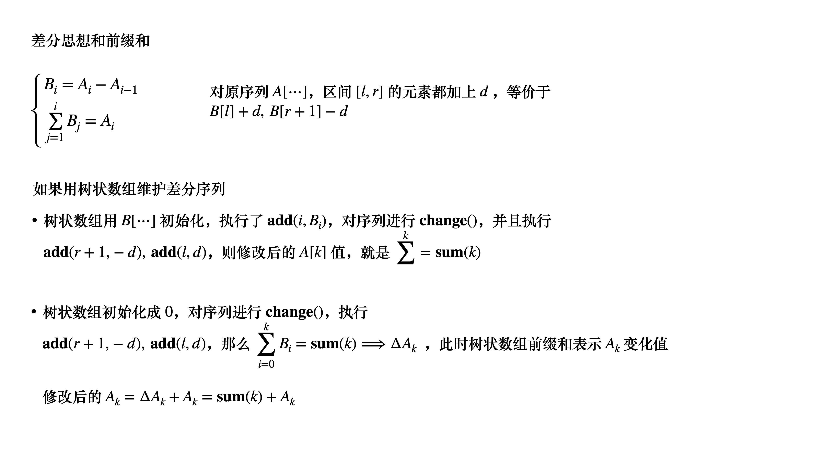

单调性专题（二）
算法设计策略中
和扫描法有关的，常常包括
- 前缀和与差分
- 前缀最大值，最小值维护
和单调性有关的，常常包括
- 单调队列与单调栈
- 滑动窗口，双指针
- 二分
二分法
整数二分
说到单调性的问题，很多二分可以解决的问题，往往也具有单调性
这里补充一些整数二分的模版
1 | 将区间 [l, r] 划分成为 [l, mid] 和 [mid+1, r] |
1 | 将区间 [l, r] 划分成为 [l, mid-1] 和 [mid, r] |
两种二分，实际上是上取整和下取整的不同
实际上，中点都满足
第一种情况
第二种情况
边界条件是
此时 恒成立
区间没有发生变化，导致死循环
解决方法是 进行上取整即可
1 | 为了简便记忆，当执行了 |
小数二分
小数二分答案，其实反而更简单
1 | double bsearch(double l, double r) { |
值得注意的是 PI 的定义
1 | const double PI = acos(-1.0); |
扫描法，二分维护历史集合
1 | class Solution { |
环形双指针
Acwing2452
本例涉及的思想有：计算几何，转角法，双指针
1 | constexpr int maxn = 800 + 10; |
滑动窗口的单调性
1 | const int maxn = 1e5 + 10; |
连续子序列问题
连续子序列问题是典型的可以用滑动窗口维护的
必要时可借助其他数据结构维护滑动窗口区间
UVA11536
这是一个求“连续子区间长度最小”的问题
1 | constexpr int maxn = 1e6 + 10; |
单调栈模型
单调栈最常用的模型就是：找到左边第一个比 小的元素
Gym101334F
根据单调栈模型，本例的算法就很简单了
- 预处理每一个，求出左边第一个比 小的元素位置
右边第一个比 小的元素 - 用区间 部分和 来更新全局的
1 | constexpr int maxn = 100000 + 10; |
差分思想
差分基础
树状数组和差分序列
差分策略常常利用树状数组作为数据结构来解决
Acwing246

1 |
本博客所有文章除特别声明外，均采用 CC BY-NC-SA 4.0 许可协议。转载请注明来自 算法小站！
打赏
 微信
微信 支付宝
支付宝
相关推荐


评论